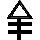

1848年11月—1849年7月
“科伦日报”驻维也纳记者
弗·恩格斯写于1849年2月17日
载于1849年2月18日“新莱茵报”第225号
原文是德文
俄文译自“新莱茵报”
俄译文第一次发表
科伦2月17日。世界历史上又少了一个谜！大家知道，用△作记号在“科伦日报”上写编辑部文章、同时以

作记号在同一家“科伦日报”上发表维也纳通讯的施万贝克先生，在这些文章和通讯中竭力诽谤马扎尔人，责难他们胆怯、下流，不仅打败了他们，而且屡次消灭了他们，并热烈欢迎联军在战地法庭的伴随下进入匈牙利各个城市和各个州。现在，施万贝克先生本人解开了这个谜；像阿基里斯一样，只有我们的施万贝克自己能够治疗他所击破的伤口。
这个谜的谜底究竟是什么呢？——害怕韦尔登。这就是要侮辱维也纳人和马扎尔人，散布关于奥地利人战绩的可耻谣言，向克罗地亚人和潘都尔兵摇尾乞怜和阿谀奉迎的原因。
因为，——大名鼎鼎的施万贝克说，——因为，他说：
“直到现在为止，卫戍司令韦尔登男爵总是直截了当地把那些敢于怀疑奥皇军队在君主国各个据点上的胜利进展的人叫做撒谎者，并封之以恶棍的光荣称号。”（“科伦日报”第40号）
由于尊敬韦尔登，“科伦日报”的读者们不得不读了两个月标着记号的关于匈牙利战争的虚构的维也纳通讯。
关于普斯库亨，歌德曾经这样说过：
“鲸鱼身上还生虱子，我又怎能免俗。”226
科苏特也能把这句话应用于施万贝克。
注 释
226 歌德“温和的讽刺诗”。——第358页。